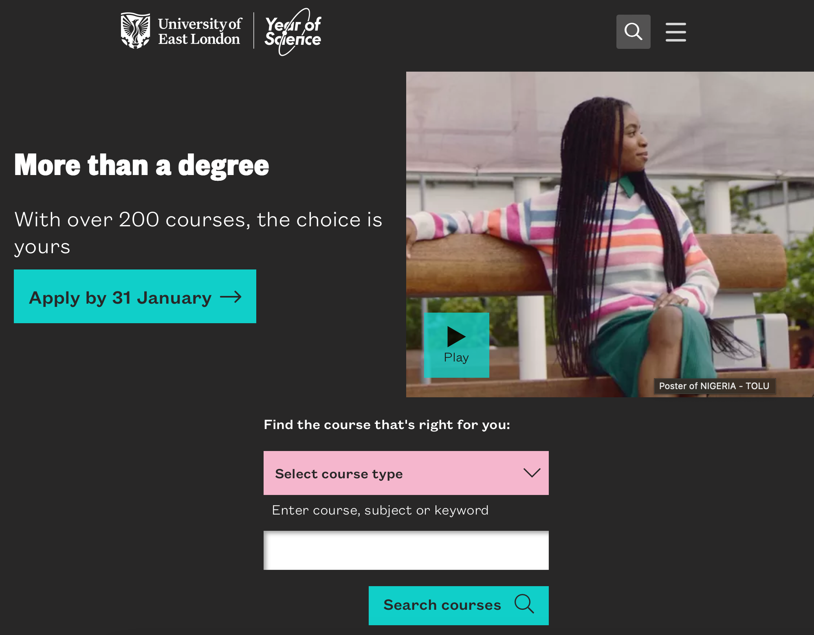
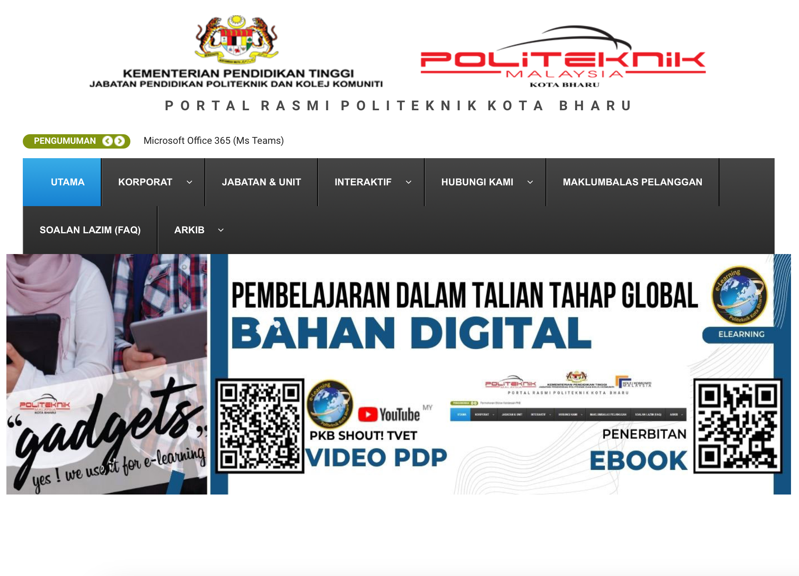
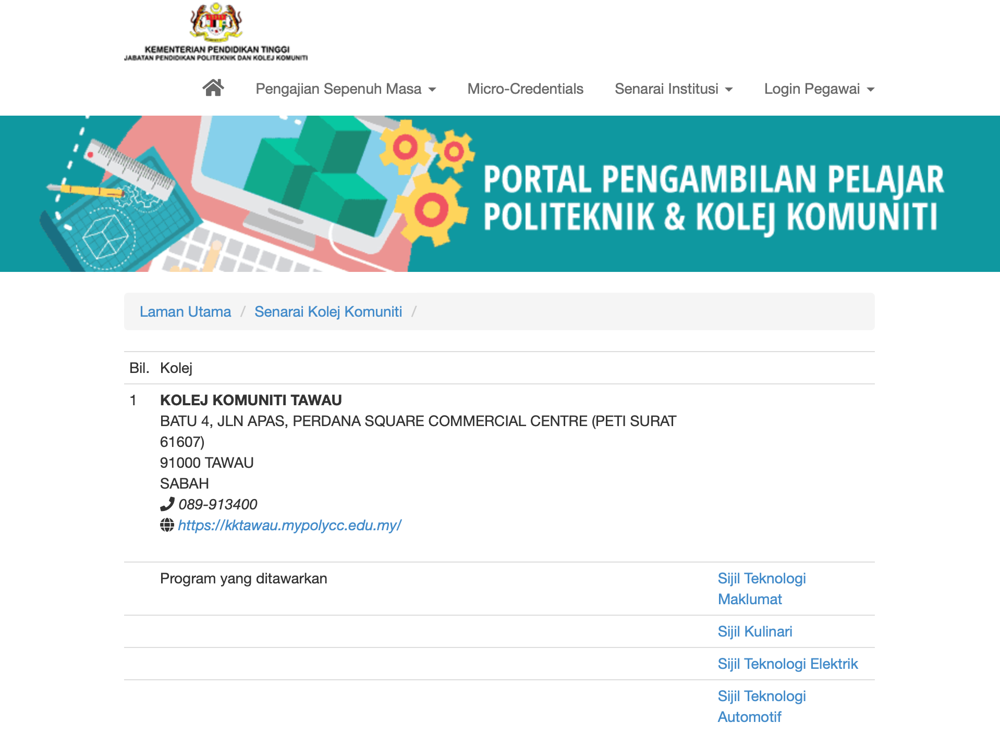

University of East London
Sept 2012 – May 2016
Bsc. Software Engineering
Software Student – Learn and approached methodologies in software environment for degree level in theoretical syllabus.
Final Year Project - Build mobile application for Hospital based on existing system available on the market and finalized to improve new features on application.

Kota Bharu Polytechnic
Aug 2008 – Aug 2009
Diploma Automotive Engineering
Mechanical Student – Learn and approached mechanical in automotive environment for diploma level in theoretical and technical syllabus.
Bridging Program – Achieved 3.50 in additional mathematics in Algebra and Calculus.
CGPA Achieved – 3.07.

Tawau Community College
Sept 2005 – Sept 2007
Cert Automotive Engineering
Mechanical Student – Learn and approached mechanical in automotive environment for certification level in theoretical and technical syllabus.
CGPA Achieved – 3.58